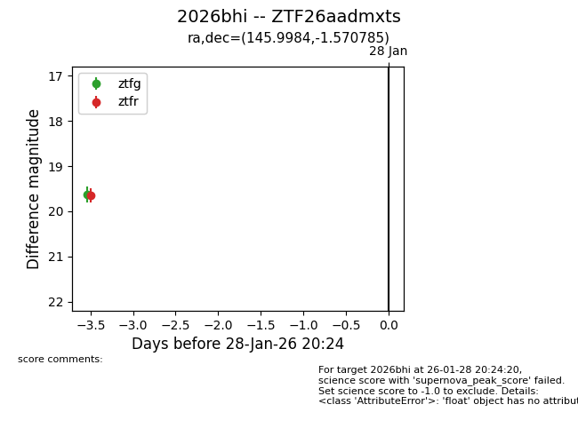
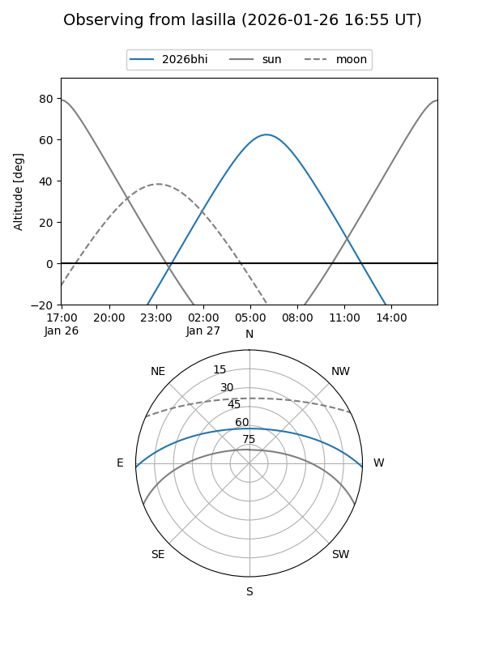
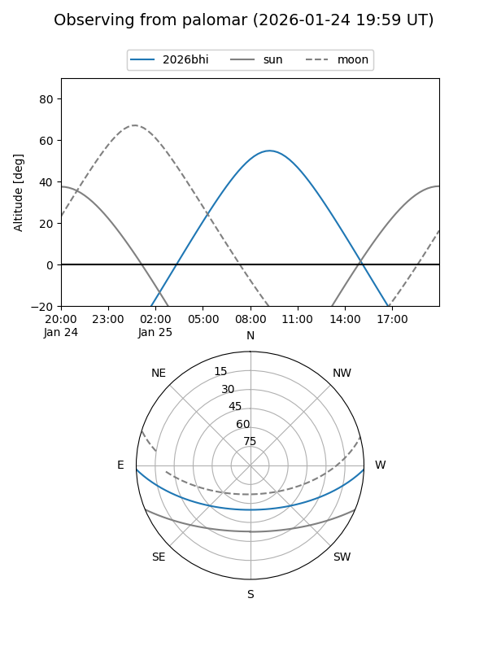

2026bhi
Target 2026bhi at 2026-01-29 07:56
Aliases and brokers:
FINK: link
Lasair: link
ALeRCE: link
TNS: link
YSE: link
alt names
ZTF26aadmxts (ztf,fink_ztf)
2026bhi (tns,yse)
Coordinates:
equatorial (ra, dec) = 145.9984,-1.57079
equatorial (HMS+DMS) = 09:43:59.62,-01:34:14.83
galactic (l, b) = (237.6688,+36.57103)
Flags:
Photometry:
last ztfg=19.62, ztfr=19.65
1 ztfg, 1 ztfr detections
Lightcurve

Visibility


Additional plots